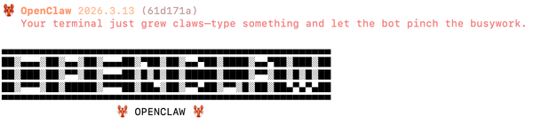
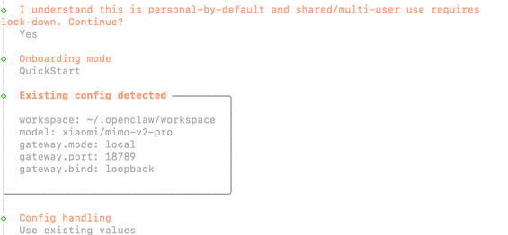
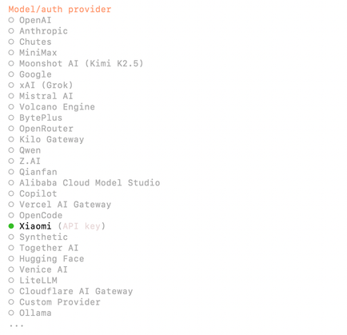
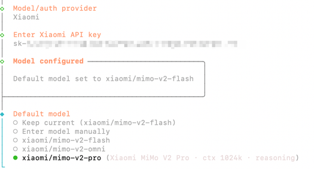
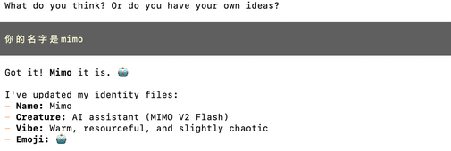
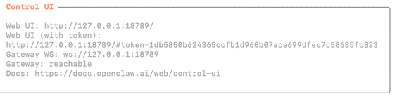
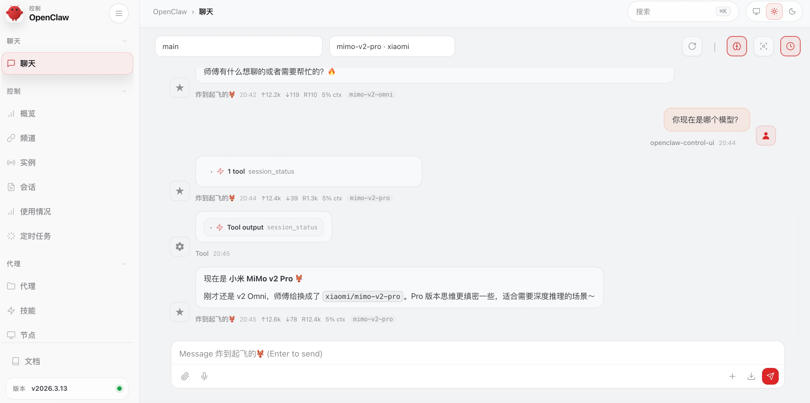

安装 OpenClaw
前置条件：Node.js 22 或更新版本
一般来说，linux自带Node.js22 以上版本，Windows版本随系统变化查看当前 Node\.js 版本（两个系统通用）
查看是否有node.js，linux和Windows，命令完全一样：
node -v
# 或者
node --version- 执行后会输出：
vxx\.xx\.xx（例如v20\.10\.0） - 如果提示
不是内部或外部命令，说明没安装 Node\.js 或没配置环境变量
Windows 系统 安装 Node\.js 22 版本
方法 1：官方安装包（最简单、最推荐）
- 下载：
node\-v22\.0\.0\-x64\.msi
- 双击安装 → 一路下一步 → 安装完成
- 重启终端（CMD/PowerShell），执行
node \-v验证
方法 2：命令行一键安装（winget）
Windows 10/11 自带包管理器，直接运行：
winget install OpenJS.NodeJS.22Linux 系统 安装 Node\.js 22 版本
最通用、最稳定方法（官方源，支持 Ubuntu/Debian/CentOS）
一行命令直接安装 Node\.js 22：
curl -fsSL https://deb.nodesource.com/setup_22.x | sudo -E bash -
sudo apt-get install -y nodejs验证安装
node -v
npm -v安装openclaw
macOS/Linux：
curl -fsSL https://openclaw.ai/install.sh | bashWindows (PowerShell)：
iwr -useb https://openclaw.ai/install.ps1 | iex
由于笔者的项目倾向于小米的模型，故配置模型，选用小米的，读者要更具自己所需自由选择模型，各个模型大差不差，
并未高低之分。
配置 MiMo 模型
方法1：交互式配置向导
安装完成后，将自动开始配置过程。您也可以运行以下命令开始配置：
openclaw onboard --install-daemon1. 配置供应商


- I understand this is personal-by-default and shared/multi-user use requires lock-down. Continue? ➡️ Yes
- Onboarding mode ➡️ QuickStart
- Config handling ➡️ Use existing values
- Model/auth provider ➡️ Xiaomi
2. 配置模型和 API Key

3. 继续完成后续配置
- Select channel ➡️ 选择您需要的渠道
- Configure skills ➡️ 安装您需要的 skills
- 完成设置
4. 测试机器人
- How do you want to hatch your bot? ➡️ 可在 TUI/Web UI 中和机器人对话
- TUI：输入
openclaw tui，若成功对话则表示配置成功

- Web UI：通过打开终端中显示的
Web UI (with token)链接来访问 Web UI


方法2：修改配置文件
在 ~/.openclaw/openclaw.json 添加模型，并修改 agent 的默认模型即可。
以下仅供参考，不代表最新最新json文件，你只需要把前面标题一样的修改就行，不要替换整个json
{
"models": {
"mode": "merge",
"providers": {
"xiaomi": {
"baseUrl": "https://api.xiaomimimo.com/v1",
"apiKey": "",
"api": "openai-completions",
"models": [
{
"id": "mimo-v2-pro",
"name": "mimo-v2-pro",
"reasoning": true,
"input": [
"text"
],
"contextWindow": 1048576,
"maxTokens": 32000
},
{
"id": "mimo-v2-omni",
"name": "mimo-v2-omni",
"reasoning": true,
"input": [
"text",
"image"
],
"contextWindow": 262144,
"maxTokens": 32000
}
]
}
}
},
"agents": {
"defaults": {
"model": {
"primary": "xiaomi/mimo-v2-pro"
},
"models": {
"xiaomi/mimo-v2-omni": {},
"xiaomi/mimo-v2-pro": {}
},
},
},
}接入飞书教程
https://cloud.tencent.com/developer/article/2626160 （【保姆级教程】手把手教你安装OpenClaw并接入飞书，让AI在聊天软件里帮你干活）
龙虾常用指令
以下是OpenClaw（龙虾） 高频、实用的指令，覆盖会话管理、模型切换、服务控制、配置与调试等场景，直接复制即可使用。
一、会话与基础控制（/ 开头，不耗 Token）
/new：开启全新会话，清空当前上下文，节省 Token
/status：查看当前会话状态（模型、会话 ID、连接情况）
/clear：清空当前会话历史（保留会话，仅删除对话记录）
/exit：退出当前会话，关闭连接
二、模型管理（多模型切换）
/models：列出所有已配置的可用模型（含名称、类型、状态）
/model 模型名：切换到指定模型（如/model gpt\-4o）
/model：查看当前正在使用的模型
以上可以在对话框里与龙虾使用，以下需要在终端里使用
三、服务与网关控制（本地 / 服务器部署）
openclaw gateway start：启动网关服务（核心，连接 AI 与客户端）
openclaw gateway stop：停止网关服务（升级 / 改配置前用）
openclaw gateway restart：重启网关（修改配置后必用，使新配置生效）
openclaw gateway status：查看网关运行状态（是否在线、端口、连接数）
openclaw logs \-\-follow：实时查看日志（排查问题必备）
四、配置与部署（初始化 / 自定义）
openclaw onboard：启动本地部署向导（配置 API、端口、模型）
openclaw config set 键 值：修改配置项（如openclaw config set port 18789）
openclaw config get 键：查看配置项（如openclaw config get api\_key）
openclaw config list：列出所有配置项
五、实用快捷指令（直接发送）
- 总结内容：
总结这段内容，列出3条核心要点
- 格式转换：
把内容整理成表格/列表/Markdown格式
- 文本提取：
提取图片/文件中的文字
- 翻译：
翻译以下内容，保持原意
- 待办生成：
把内容转为待办清单，标注时间与优先级
六、Linux/Windows 通用操作（部署后）
- 启动服务：
openclaw start
- 停止服务：
openclaw stop
- 查看版本：
openclaw \-\-version
- 安装依赖：
npm install openclaw \-g（全局安装）